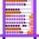
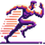

Linguística
Nota: Essas são ideias pra começar — use sua criatividade pra inventar outras formas de expressão!
-
Poema Visual:
- Escreva um poema curto (4-6 linhas) no bloco de notas.
- Abra o Canva, escolha "Criar um design" > "Post para Instagram".
- Adicione o texto, use uma fonte artística (ex.: "Pixelify Sans").
- Insira um fundo colorido ou imagem abstrata.
- Exporte como PNG.
-
Conto Ilustrado:
- Escreva um conto curto (3-5 frases) no celular ou PC.
- Faça desenhos simples no Paint pra cada frase.
- Tire foto dos desenhos ou salve como PNG.
- Junte texto e imagens no Canva num layout de página.
- Exporte como PNG ou PDF.
-
HQ Narrativa:
- Escreva um diálogo curto (4 quadros) no bloco de notas.
- Desenhe os quadros no papel ou Paint com personagens simples.
- Escaneie ou tire foto dos desenhos.
- Monte no Canva com balões de fala.
- Exporte como PNG.
-
Spoken Word:
- Escreva um poema de 30 segundos.
- Grave sua voz lendo no celular (app Gravador).
- Adicione um fundo musical leve (use InShot ou Audacity).
- Exporte como MP3.
- Teste o áudio como NFT.
 Lógico-Matemática
Nota: Essas são apenas ideias iniciais — explore além com métodos, enigmas ou até jogos visuais!
-
Arte Geométrica:
- Abra o Paint ou Canva.
- Desenhe formas (círculos, triângulos) em padrão simétrico.
- Use cores vibrantes pra preencher.
- Adicione detalhes (linhas, pontos) pra criar profundidade.
- Salve como PNG.
-
Puzzle Interativo:
- Desenhe uma imagem simples no Paint (ex.: um rosto).
- Corte em 4-6 partes com a ferramenta de seleção.
- Salve cada parte como PNG separado.
- Junte as partes num arquivo ZIP ou PDF.
- Teste como um NFT interativo.
-
Infográfico Animado:
- Crie um gráfico simples no Canva (ex.: barras coloridas).
- Adicione texto explicativo (ex.: "Meu dia").
- Use a ferramenta de animação do Canva (ex.: "Fade").
- Exporte como MP4.
- Teste como NFT animado.
-
Escultura Lógica:
- Monte uma estrutura 3D com formas encaixadas (ex.: cubos de papel).
- Fotografe em ângulos diferentes.
- Escolha a melhor foto e edite no celular.
- Salve como PNG.
- Teste como NFT.
Espacial
Nota: Essas são ideias pra começar — imagine cenários ou objetos únicos pra ir além!
-
Ilustração Fantástica:
- Pense num cenário imaginário (ex.: planeta alienígena).
- Desenhe no Paint ou papel com detalhes (cores, sombras).
- Escaneie ou tire foto do desenho.
- Ajuste brilho/contraste no celular.
- Salve como PNG.
-
Miniatura 3D:
- Modele um objeto surreal com argila ou massa (ex.: nave).
- Pinte com cores chamativas (tinta ou caneta).
- Fotografe contra um fundo neutro.
- Edite no celular pra destacar (ex.: app Snapseed).
- Salve como PNG.
-
Mapa Artístico:
- Abra o Canva ou desenhe um mapa fictício no papel.
- Adicione elementos (montanhas, rios) com cores vivas.
- Use texto pra nomear lugares criativos.
- Exporte como PNG ou fotografe.
- Teste como NFT.
-
Colagem Visionária:
- Tire 3-5 fotos no celular (ex.: céu, objetos).
- Abra o Canva, crie um "Post para Instagram".
- Combine as fotos com desenhos ou filtros.
- Adicione um toque futurista (ex.: linhas neon).
- Exporte como PNG.
 Corporal-Cinestésica
Nota: Essas são apenas sugestões — crie com o corpo ou mãos de formas que só você imagina!
-
Dança Digital:
- Crie uma coreografia curta (30 segundos).
- Filme com o celular em um lugar simples.
- Edite no InShot com efeitos (ex.: slow motion).
- Exporte como MP4.
- Teste como NFT animado.
-
Escultura Viva:
- Modele uma forma com argila ou massa (ex.: figura humana).
- Adicione detalhes com ferramentas simples (ex.: palito).
- Fotografe em ângulos dinâmicos com boa luz.
- Escolha a melhor foto.
- Salve como PNG.
-
Performance em Stop-Motion:
- Planeje um movimento (ex.: mão abrindo).
- Tire 10-15 fotos em sequência com o celular.
- Junte as fotos num vídeo (app Stop Motion Studio).
- Exporte como MP4.
- Teste como NFT.
-
Arte Tátil:
- Pegue materiais reciclados (papelão, tecido).
- Crie um relevo colando camadas (ex.: formas abstratas).
- Fotografe com sombra pra destacar textura.
- Edite no celular pra realçar.
- Salve como PNG.
Musical
Nota: Essas são ideias iniciais — misture sons ou crie melodias que ninguém nunca ouviu!
-
Batida Original:
- Grave sons do dia a dia (ex.: batidas na mesa) com o celular.
- Abra o Audacity, importe os sons.
- Crie um loop rítmico cortando e repetindo.
- Exporte como MP3.
- Teste como NFT sonoro.
-
Melodia Visual:
- Crie uma melodia curta no celular (app GarageBand).
- Abra o Canva, faça um vídeo com formas coloridas.
- Sincronize o áudio com animações (ex.: "Pulse").
- Exporte como MP4.
- Teste como NFT.
-
Poesia Sonora:
- Escreva um poema curto e grave sua voz (celular).
- Adicione sons ambientes (ex.: vento) no Audacity.
- Misture as camadas pra criar um efeito único.
- Exporte como MP3.
- Teste como NFT.
-
Paisagem Acústica:
- Grave sons da natureza ou cidade (celular).
- Abra o Audacity, corte e junte os melhores trechos.
- Adicione fade in/out pra um toque artístico.
- Exporte como MP3.
- Teste como NFT sonoro.
Interpessoal
Nota: Essas são sugestões — junte amigos pra criar algo único que reflita vocês!
-
Mural Coletivo:
- Reúna amigos e peça um desenho ou foto de cada.
- Abra o Canva, crie um "Poster".
- Junte todas as artes num layout harmonioso.
- Exporte como PNG.
- Teste como NFT colaborativo.
-
Narrativa em Camadas:
- Crie uma história com amigos (cada um fala uma parte).
- Grave as vozes no celular separadamente.
- Junte os áudios no Audacity com transições.
- Exporte como MP3.
- Teste como NFT sonoro.
-
Galeria de Retratos:
- Fotografe ou desenhe rostos de amigos (celular ou Paint).
- Abra o Canva, crie um "Collage de Fotos".
- Adicione cada retrato com bordas criativas.
- Exporte como PNG.
- Teste como NFT.
-
Teatro Digital:
- Escreva uma cena curta com amigos (2-3 falas).
- Filme a atuação com o celular.
- Edite no InShot com texto ou efeitos.
- Exporte como MP4.
- Teste como NFT animado.
Intrapessoal
Nota: Essas são ideias pra começar — expresse quem você é de jeitos novos e pessoais!
-
Autorretrato Emocional:
- Escolha um sentimento (ex.: alegria) e desenhe no Paint.
- Use cores que reflitam essa emoção.
- Adicione detalhes pessoais (ex.: um símbolo seu).
- Salve como PNG.
- Teste como NFT.
-
Diário em Camadas:
- Escreva um pensamento no bloco de notas.
- Abra o Canva, crie um "Post para Instagram".
- Adicione o texto e fotos ou desenhos seus.
- Exporte como PNG.
- Teste como NFT.
-
Mandala Digital:
- Desenhe uma mandala no papel ou Canva.
- Use cores que representem você.
- Escaneie ou exporte como PNG.
- Ajuste contraste no celular se precisar.
- Teste como NFT.
-
Reflexão Animada:
- Escreva uma frase sobre sua vida.
- Grave sua voz ou digite no Canva.
- Crie um vídeo com texto animado (ex.: "Fade").
- Exporte como MP4.
- Teste como NFT animado.
Naturalista
Nota: Essas são sugestões — use a natureza pra contar histórias ou criar do seu jeito!
-
Paisagem Viva:
- Fotografe uma cena natural (ex.: árvore).
- Edite no Paint ou celular com um filtro surreal.
- Adicione um desenho (ex.: criatura) na foto.
- Salve como PNG.
- Teste como NFT.
-
Escultura Orgânica:
- Junte folhas, pedras ou galhos numa forma.
- Arrume num fundo contrastante (ex.: areia).
- Fotografe com boa luz.
- Ajuste cores no celular.
- Salve como PNG.
-
Padrão Botânico:
- Desenhe folhas ou flores no Canva ou papel.
- Repita o desenho num padrão abstrato.
- Use cores terrosas ou vibrantes.
- Exporte ou fotografe como PNG.
- Teste como NFT.
-
História da Natureza:
- Pegue folhas ou pedras e crie uma sequência.
- Tire 10-15 fotos com o celular mudando posições.
- Junte num vídeo (Stop Motion Studio).
- Exporte como MP4.
- Teste como NFT animado.